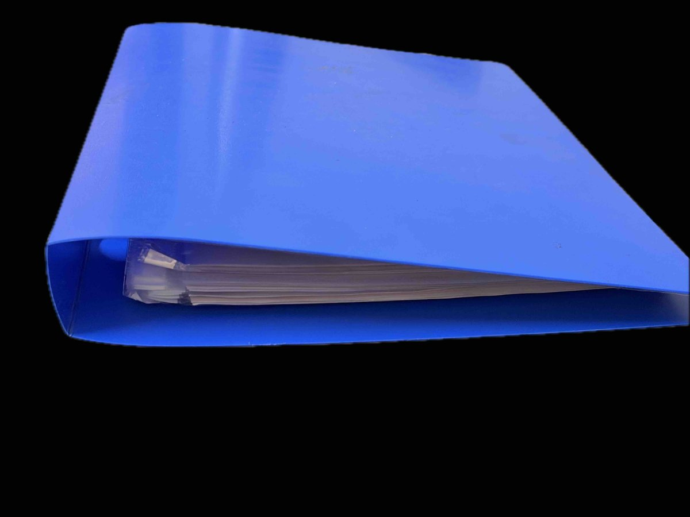

How this came to be — month by month, conversation by conversation, layer by layer. The longer arc behind the blue file.
"We learn in layers."
— Vikram, Astrology 101For about six months — through the back half of 2025 and into 2026 — Sree has been quietly printing pages from Vikram's class. Slides, transcripts, the occasional table, anything worth a second look. They go into a plastic folder. The folder gets thicker.
I don't learn by memory. I need a lot of references all the time. I needed something pocket-friendly and handy.
The ritual is unglamorous. Print, hole-punch, slide into plastic, file. Cringe a little at the cost-per-page and the time it takes. Carry the binder to the next class anyway.

Somewhere in the same months, Sree starts saying it out loud — to Sathvi, to Arpi, to whoever will listen. "What if we built a beautiful astrology software, using Vikram's reference material? Something that actually does the material justice?" Nobody disagrees. Nobody starts. The thought just hangs there, low-grade resonant, waiting for a moment.
At the retreat, two things land within hours of each other.
First: Rashmi mentions she's been meaning to make a reference folder of her own — one of those moments where you realise the need isn't yours alone, the cohort feels it too. Sree quietly cringes, thinking through the paper-plastic-print ritual a second person would now have to perform.
Second: at one of Vikram's sessions, he names the moment — time for an end-of-year project. Sanchi and Sree turn to each other and the answer arrives almost in unison: flashcards, maybe? Not a product yet. Just a question — what's the best way to actually remember all of this material, for us and for the cohort?
More on the retreat itself in Ether — the five-elements framework, Nirvāṇa Shatakam, the Chidambaram secret.
Sree starts playing. The first thing that comes out is V0 — a single, crude HTML page with the twelve signs as flashcards. No build pipeline, no framework. Just a file you can open in a browser. It's enough to feel right. It's enough to keep going.
This is the month where five different things converge, almost coincidentally. None of them was planned to feed the project. Each one ends up doing exactly that.
The KB. Sree had already been on a separate journey of exploring AI tools — and as part of that, he wrote utilities to extract class transcripts and decks. The output was supposed to be a personal exercise. It became the knowledge base everything else now sits on.
Mercury Spectrum. After the Mercury session in class, Sree builds a spectrum tracker — Mercury's twelve dualities as a slider you move yourself across — and shares it with the peer learning group. The build pulls together a pattern he'd never used before — Google's design tools, Cursor, Claude, Antigravity, all braided. Something clicks about what becomes possible when the knowledge base is right there next to the build tools.
Kālapurusha. Between mid-April and May 3rd, Sree works directly with Vikram on a modern Kālapurusha page. Multiple rounds of feedback — corrections, additions, re-orderings, rebalancings.
Vikram had multiple rounds of feedback for Kālapurusha, and so did I. It evolved, and so did I evolve.
Planetary motion. Similar work on retrograde motion — vakra, anuvakra, atichara. Shared as a PNG to the peer group. Not yet in the app. The learning was its own reward.
Hosting. A small detour: Sree stands up static.app to explore static hosting — the path that eventually carries this project to its first public URL.
Vikram keeps saying we learn in layers. I can see the layers here. Just fascinated by this.
The most recent Mercury session in class doesn't only feed a feature on the page. Something deeper lands.
Mercury is Budha. Sanskrit's word for awakened intelligence is Buddhi. The two share the same root. Sree sits with that.
A deep calling inside for awakening, after the session. I'm still yet to understand why I have a deep calling in this path. But I am in a flow, and that's what matters.
The day before. Sree and Sanchi agree to team up. Not as helpers to each other, but as partners on whatever this becomes. Sanchi presents the idea — the thought, the concept, the direction — to Vikram and to Mega.
Three angles open up in the same conversation:
One — a pocket reference for the cohort, alongside Vikram's class. The original pitch, still true.
Two — a learning companion app, beyond this cohort, beyond this class. Something a future Vedic-astrology learner could pick up and grow with.
Three — a commercial venture, eventually. Not the point, but a real possibility on the table.
More exciting than the commercial part is being able to do real things, enjoy the domain, and solve real problems for real people. What an exciting time to be in.
Today, in response to Sathvika's WhatsApp note that text-heavy reference doesn't always land for her — "I learn through visuals, spatial layouts, 3D representations. Stories help me hold on to things" — the Interactive Lab opens a new room. The Planetary Cabinet as a stage, with a cinematic Story autoplay, a Court of Friendships overlay, all laid out as a South Indian chart.
The pattern is the same as every layer before it. A peer says what they need. The build follows.
The page is alive. The layers haven't stopped landing. The next one will appear when it does — from a session, from a conversation, from someone in the cohort who needs something this app doesn't yet do.
· · ·
What should we call you?